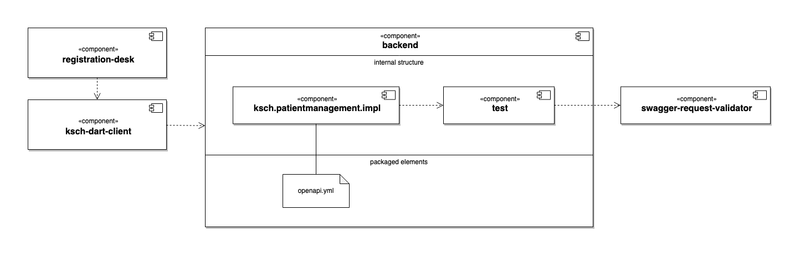
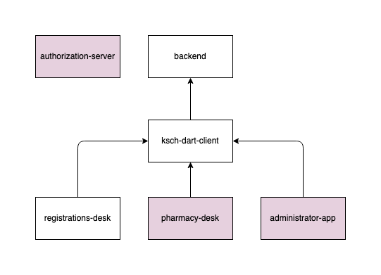

This website contains the software architecture documentation for the K.S.C.H. Workflows project.
Overview
The sections of the documentation are derived from the arc42 template:
| # | Section | Scope |
|---|---|---|
| 1 | Introduction and Goals | Requirements, stakeholder, (top) quality goals |
| 2 | Constraints | Technical and organizational constraints, conventions |
| 3 | Context and Scope | Business and technical context, external interfaces |
| 4 | Solution Strategy | Fundamental solution decisions and ideas |
| 5 | Building Block View | Abstractions of source code, black-/whiteboxes |
| 6 | Runtime View | Runtime scenarios: How do building blocks interact |
| 7 | Deployment View | Hardware and technical infrastructure, deployment |
| 8 | Crosscutting Concepts | Recurring solution approaches and patterns |
| 9 | Architectural Decisions | Important decisions |
| 10 | Quality Requirements | Quality tree and quality scenarios |
| 11 | Risks and Technical Debt | Known problems, risks and technical debt |
| 12 | Glossary | Definitions of important business and technical terms |
Introduction and Goals
K.S.C.H. Workflows is a prototype for a custom-built hospital information system (HIS) for the Kirpal Sagar Charitable Hospital.
For the time being it should be considered as academic endevour, aimed at learning to build solid software systems, outside of the commercial pressure of normal software projects and health care facilities.
Quality goals
- The software needs to be reliable. Thus the source code should have maximum simplicity.
- The software needs to be simple to operate, so that the KSCH staff can operate is by themselves.
- The software needs to be fast.
- There should be no vendor lock-in so that the KSCH doesn't have a strong binding dependency on any external company.
References
- https://docs.arc42.org/section-1/
- https://blog.crisp.se/2016/03/16/perlundholm/continuous-discovery-and-validation
- https://dev.to/janux_de/building-a-greenfield-hospital-information-system-with-java-spring-boot-apache-wicket-and-gradle-4np1
- Building a Greenfield Hospital Information System with Java, Spring Boot, Apache Wicket and Gradle | dev.to
Constraints
References
Context and Scope
References
Solution Strategy
References
Domain Driven Design
Motivation
Form follows function
The purpose of this software system is to support the day-to-day processes in the Kirpal Sagar Charitable Hospital. How the system is structured internally is a secondary matter. What is important is that it supports the functional and operational requirements of the hospital staff. Further, it is important that the system can be molded when there the requirements are changing. So when new developers are coming into the system, it should be fairly easy for them to add new features or adapt existing features.
All software design patterns which are introduced need to be tested against this testing stone.
Object naming conventions
Data bag
In every software system there are actors and work materials which manifest in various layers of the software. In each layer there is a different focus for what needs to be done with the data.
- In the persitence layer it needs to be mapped to the database structure.
- In the domain layer there are business processes which are working on the data.
- In the user interface layer the data gets received.
In order to keep the different concerns distinct but still be able to keep them in sync, for every actor or work material there should be an interface which defines getter methods for the required data, e.g.
public interface Patient {
Object getName();
Object getAge();
Object getGender();
}
On this layer the abstract Object type is being used so that each layer can decide on its own what is the approperiate data type there, e.g. getName() can return String on the database layer and Optional<Name> on the business layer.
Data Access Object
For the sake of convenience the object relational mapper JPA/Hibernate will be used in this project. The objects which will be mapped to the database columns will have the suffix "Dao".
The main idea here is to keep the JPA related annotations distinct from the classes which are used to process the business logic.
In order to prevent a broad usage of those classes, they should be package private.
Please note that this is a custom interpretation of the name "Data Access Object" which differs from common DAO pattern implementations. So maybe in future this could be renamed. However, other possible terms for this design idea, e.g. "Bean", might also invoke connotations to different concepts.
Domain Events
- https://martinfowler.com/eaaDev/DomainEvent.html
- https://docs.microsoft.com/en-us/dotnet/architecture/microservices/microservice-ddd-cqrs-patterns/domain-events-design-implementation
- https://www.innoq.com/en/blog/domain-events-versus-event-sourcing/
References
- https://github.com/xmolecules/jmolecules
- https://www.reddit.com/r/learnjava/comments/b2h3pm/differences_between_java_bean_entity_class_dao/
- https://www.martinfowler.com/bliki/AnemicDomainModel.html
- https://en.wikipedia.org/wiki/Data_access_object
OpenAPI
OpenAPI is a standard for the specification of HTTP APIs. It is designed to be readable both by humans and by machines. So, it is possible to declare OpenAPI Specifications (OAS) in a plain text file that can then be used by computer projects for validation and code generation.
Table of contents
Overview
The backend component offers a REST API for the frontend components like for example registration-desk.
Inside the backend there are for example the sub-components ksch.patientmanagement.impl and test. The ksch.patientmanagement.iml component defines the REST handlers which will process the requests from the API clients.
The test component defines various utilities which can be used for the internal tests of the other components.
It has a dependency on Atlassian's open-source project swagger-request-validator and defines a utility class for its initialisation.
The internal tests of ksch.patientmanagement.impl components leverage the functionality of swagger-request-validator to verify that the test requests and responses match with the API structure defined in the OAS.
The registration-desk uses the Dart library ksch-dart-client for accessing the REST API. Currently, the code of that component is manually created. Later on, the Dart code in the ksch-dart-client component could be generated from the openapi.yml file.
The structures described above are visualised with the following UML Component Diagram:

API design process
The idea of the API design process is to create the "spec first" and afterwards the implementation.
So, if the maintainers of frontend clients need a change in the backend API, they can propose a change in the openapi.yml.
Once there is an agreement on the change to the OSA, the backend maintainer and the frontend client maintainers can work in parallel on the new feature.
Also see
- Using spec-first API development for speed and sanity | atlassian.com
- Episode 542: Brendan Callum on Contract-Driven APIs | se-radio.net
Documentation
The backend's API documentation is generated from the OAS with the free plan of the SaaS service bump.sh.
References
Building Block View

The backend provides a REST API which abstracts database access and business process validations for the client applications.
All the client applications are Flutter apps. They are using the ksch-dart-client library for accessing the REST API of the backend.
The registration-desk is a Flutter Web app to be used at the registration desk of the KSCH.
Later on there should also be a Flutter Web app for the pharmacy desk.
Further, there should be a Flutter Android app for the hospital administrator.
For the first experiments with the system, all the REST requests will be unauthenticated. When the system goes live, the requests should be authenticated using an API token aquired via an OAuth 2.1 authorization server.
References
Runtime View
References
Deployment View
Development
The backend is hosted on the Google App Engine.
The Flutter Web apps for the various work stations are hosted on GitHub pages. It might be better not to bundle those components during development, so that the online apps can be updated independently. This simplifies the continuous deployment process and shortes the build times and thus the feedback cycle.
Staging
The final QA for production releases could be done with temporay VMs hosted on the Digital Ocean platform, using the same app structure like the production system.
Production
The production system is started via Docker Compose with the following services:
- MySQL database
- backend
- for each Flutter Web app there is a separate HTTP service which hosts it
Maybe the web apps could also be copied into the src/main/resources/static
directory of the backend when it is compiled for production use.
This would also make it possible to host the whole system on the Google App Engine
which would have the advantage that it can be accessed by the doctors also
from home. And if the system doesn't deal with medical records, the data
should not be too sensitive to be hosted in a public cloud.
Even if we use the cloud for the production system, it might be best to use Digital Ocean or plain VMs on the Google Cloud to keep the door open for self-hosted servers. Using the Google App Engine would simplify the operations, though. It takes care e.g. care of log storage and alerts.
References
Crosscutting Concepts
References
Architectural Decisions
This section provides an overview over the rationale behind important structural decisions.
References
2021
| Date | Subject | Summary |
|---|---|---|
| 05.03.2021 | Backend technology | Use Google App Engine for the deployment of the staging environment |
| 05.03.2021 | Frontend technology | Use Flutter as framework for frontend |
| 07.03.2021 | Java vs. Kotlin | Use Java instead of Kotlin |
| 08.05.2021 | Backend architecture | Java application architecture style |
Java application architecture style
Context
There needs to be a concept for the module structure of the backend server.
Design goals
- The business logic of the software needs to be very flexible, so that it can be adjusted to changing requirements of the KSCH.
- The system needs to have good testability, so that there can be a very good test coverage for those business rules.
- Enable hobby developer to contribute to the project in limited spare time. In order to achieve this, the congnitive load for working on a part of the system needs to be reduced to the minimum.
- The system needs to be able to grow to support a wide range of functional requirements, so that it can potentially support all the IT based processes in the KSCH.
Constraints
- As programming language, Java should be used, since it will most likely be supported and have a large community over the next decade.
- As application framework, Spring should be used, since it allows to make rather fast progress with a very small development team.
- There will be only a single process running for the backend server, i.e. no microservice architecture. The reason for this to keep the operational complexity of the system at a level where the KSCH staff might operate the system independently.
Alternatives
(A) Gradle based modules
The modules may be based on Gradle's multi-project builds. Every module can have two nested modules: one for the API and one for the implementation. If one module wants to use the API of another module, it will only be able to use the classes defined in the API submodule.
Pros
- Gradle features take care to limit cross-module access on the intended API and to avoid cyclic dependencies between modules.
- It is theoretically possible to automatically render module dependendency graphs by parsing the Gradle configuration.
- The system design can be understood by referencing to the Gradle documentation which is good.
- Once it Gradle parts are understood, it is fairly each to introduce new modules.
Cons
- In order to add new modulues, one needs to understand the Gradle project structure and then do a dozen of steps.
- Gradle makes regular breaking changes, which leads to maintenance efforts.
- There is no known example for a production system which was successful using this architecture.
- It is not yet clear how to manage database migrations with this architecture style.
References
- https://github.com/ksch-workflows/ksch-workflows
- https://docs.gradle.org/current/userguide/multi_project_builds.html
- https://dev.to/janux_de/building-a-greenfield-hospital-information-system-with-java-spring-boot-apache-wicket-and-gradle-4np1
- https://www.petrikainulainen.net/programming/gradle/getting-started-with-gradle-creating-a-multi-project-build/
- https://www.tutorialspoint.com/gradle/gradle_multi_project_build.htm
- https://spring.io/guides/gs/multi-module/
(B) Modulith
The Moduliths project is an experimental approach to achieve a good modularization for monolithic Spring applications by Oliver Drotbohm.
Pros
- There is a low risk of the "Architect's Ivory Tower" where there is a "Lack of Transparency" of the system's architecture and a "Lack of Understanding" from the developers (see Knoernschild, p. 30 ff.).
- The concept addresses many common architectural problems: cyclic dendencies, complexity, ...
Cons
- Learning efforts for Maven and ArcUnit.
- Using this approach creates a depencency on a one-person project which might be abandoned at any time.
- The README introduces the project as "A playground to build technology supporting the development of modular monolithic (modulithic) Java applications." So it looks rather like an experimentation ground than an estabilished pattern for production systems.
- It relies on conventions enforced by ArchUnit to provide access control. The api/implementation destincition from Gradle might make it clearer what is intended to be accessible or not.
- It assumes that the whole application is living a in a single Java package. The modules are then defined as subpackages. This creation a weaker demarkation line for modules than Maven or Gradle sub-projects.
References
- https://github.com/odrotbohm/moduliths
- https://www.youtube.com/results?search_query=modulith+drotbohm
- https://github.com/st-tu-dresden/salespoint
- Knoernschild: Java Application Architecture, Kirk Knoernschild
(C) Buckpal
The Buckpal project is a reference implementation of the clean architecture principles by Tom Hombergs.
Pros
- Clear application structure based on the "Hexagonal architecture" design which may be considered as "best practice".
Cons
- The example application is for a rather small domain. So it is not clear how this application style will scale for large domains.
References
- https://github.com/thombergs/buckpal
- https://www.amazon.de/dp/B07YFS3DNF/ref=dp-kindle-redirect?_encoding=UTF8&btkr=1
(D) Leasing Ninja
The Leasing Ninja project is a reference implementation of domain-driven design principles by Henning Schwentner.
Pros
- Clear separation of concerns
- Clear modularization
- Support for domain driven design principles
Cons
Interesting advice about Java Module System by @joshbloch in Effective Java 3rd edition: "It is too early to say whether modules will achieve widespread use outside of the JDK itself. In the meantime, it seems best to avoid them unless you have a compelling need." - twitter.com
References
- https://github.com/leasingninja/leasingninja-java-boundedcontexts-domainmodel
- https://leasingninja.github.io/
- https://blog.plan99.net/is-jigsaw-good-or-is-it-wack-ec634d36dd6f
- https://trishagee.github.io/presentation/real_world_java_9/
- https://developer.ibm.com/languages/java/tutorials/java-modularity-1/
- Effective Java, Edition 3, Joshua Bloch, Item 15.
- reasons for low adoption of JPMS - https://youtu.be/YYvc-DNuwr8?t=1272
(E) OSGi
Pros
- Strong modularization support
- Enables a plugin system
Cons
- No direct Spring support (see https://docs.spring.io/spring-osgi/)
- Not all Java libraries cannot be used out of the box, but they need to be compiled specifically for OSGi.
- High learning effort
- It's rather a non-mainstream technologies which stands in the way for getting more developers for the system.
References
- https://en.wikipedia.org/wiki/OSGi
Decision
A combination of option A and option D seems most promising.
Use Java instead of Kotlin
Context
Kotlin tries to solve some of the problem in the design of the Java programming language. There are many senior developers which advocate to use Kotlin over Java. Also it is preferred by many mid-level developers.
Alternatives
(A) Java
Pros
- Very broadly used
- Many tools which support the language
- Lots of tutorials
Cons
- Verbose syntax
- No null safety
(B) Kotlin
Pros
- Null safety
- Good reputation
- Enables to write elegant code
Cons
- Pushes for certain design ideas (e.g. no inheritance possible by default)
- It adds an additional layer on top of Java which increases the complexity
- In some edge cases this abstraction layer in incomplete and workaround are needed
- The documentation of the standard libraries is pretty abstract
Decision
Java will be used for the sake of its simplicity. This will enable more people to work on it.
Use Google App Engine for the deployment of the staging environment
Context
In order to iterative development cycles for acceptance testing and user experience design, it is necessary provide the software in a publicly accessible domain. Since the instance will only be sporadicly used at random times, having an always online instance hosted on a rented virtual machine would be wasteful.
Alternatives
(A) AWS Lambda
Pros
- AWS offers lots of powerful features to build web applications.
- The usage based pricing plans lead to fair operational costs.
Cons
- Requires much learning to get used to the serverless paradigm.
- Using MySQL from Dart would require a package which is licensed with a copyleft license (GPL).
- Using AWS' DynamoDB would require much learning to get used to the NoSQL paradigm.
- Using Spring on AWS is possible to seems like not a good idea because of Java/Spring warm start is required.
- Using AWS Lambda creates vendor lock-in which makes it difficult to switch to another deployment platform later on.
References
- Learn AWS Serverless Computing: A beginner's guide to using AWS Lambda, Amazon API Gateway, and services from Amazon Web Services
- AWS Lambda and API Gateway Basics - Build Serverless website
- AWS Lambda and the Serverless Framework Training | Udemy
- AWS Lambda & Serverless Architecture Bootcamp (Build 5 Apps) | Udemy
- AWS Serverless APIs & Web Apps - A Complete Introduction | Udemy
(B) Google Cloud Functions
- https://github.com/GoogleCloudPlatform/functions-framework-dart
Pros
- It might be possible to use Dart both in the frontend and backend and thus have a simple system.
- Serverless computing can provide good performance with little operational effort.
Cons
- The Dart support is a prototype, at the moment.
- The maintainers of the project give feedback on pull requests or issues with low priority. E.g. there is no comment on PR#179 after 13 days.
(C) Firebase
Pros
- Low operational costs.
- Powerful features, e.g. storage and user authentication.
Cons
- Vendor lock-in.
- Business logic in storefront.
- Since Dart is not supported for Firebase's serverless offerings, it is not possible to create custom APIs without adding a new language in the stack (e.g. Python or JavaScript).
- Restrictions on the number of projects which can be created.
(D) Heroku
- Backend can be implemented with Java/Spring.
- The VM is started when a request is coming in.
- When there is no request for 30 minutes, the VM goes to sleep.
Pros
- Simple deployment process.
- Keeps to door open for an on-premise deployment.
- No operational cost.
Cons
- The free plan is limited to 512 MB (this should be sufficient for quite a while, though).
- Also the next standard plans are limited to 512 MB. And getting more RAM for a production environment would be very expensive.
- The idea to use Dart for both the backend and the frontend needs to be discarded.
- Uses Postgres as preferred database while MySQL is already in use in Kirpal Sagar.
(E) Google App Enginge
- Backend can be implemented with Java/Spring.
- It is possible to (auto?) scale to the app instances to zero when they are not used.
Pros
- Simple deployment process.
- Keeps to door open for an on-premise deployment.
- Supports MySQL via CloudSQL
Cons
- The idea to use Dart for both the backend and the frontend needs to be discarded.
References
- Scaling Google App Engine to No Instances (or maybe just 1) | by drew | Google Cloud - Community | Medium
- google app engine - How to scale down to 0 instances in GAE Standard Go - Stack Overflow
- google cloud platform - GAE automatic scaling does not scale down to 0 - Server Fault
Decision
- AWS Lambda requires too much learning and creates too much vendor lock-in.
- Google Cloud Functions via the Dart functions framework created too much risk because it may never be production ready.
- Using Firebase creates vendor lock-in and moves all the business logic in the frontend.
- Heroku is applicable but they don't offer temporary high-performance VMs.
- Google App Engine offers hosting of Java/Spring applications on high-performance VMs which can scale down to zero instances.
So, it seems like it will be better to use a classic Java/Spring backend instead of a cutting-edge serverless backend. Google App Engine seems like a good fit in terms of features and price.
Use Flutter as framework for frontend
Alternatives
(A) Apache Wicket
Pros
- Powerful framework to create Java based web applications.
- Relativly small learning curve for new contributors.
- Supports the reaction of a well designed, modular page structure.
- Very active community.
- The framework is time-tested and stable.
Cons
- Adding pages with highly dynamic content requires JavaScript which is possible to be hooked into Wicket applications but this gets more and more complicated and thus goes against the goal of maximum simplicity of the source code.
- Very small community.
(B) Vaadin
Pros
- Powerful framework to create Java based web applications.
Cons
- It is hard to write the Vaadin apps using TDD.
- Comprehensive testing of Vaadin apps requires their enterprise plan which costs too much for this project and is not suitable for open source contributors.
(C) Flutter
Flutter is a frontend framework which started out for mobile devices and now supports also web and desktop applications.
Pros
- There is a very large community around Flutter.
- Enables professional designs without complex CSS.
- Has a high potential to become one of the next mainstream UI frameworks.
Cons
- The web and desktop support is not yet mature.
Decision
Only with Flutter it is possible to create user interfaces for the web, mobile devices, and the desktop. This is essential because of the tiny size of the development team. Even though Flutter Web and desktop support is rather new, it works and will surely become better and better over time. That's why it seems like Flutter is the best choice for this project.
Quality Requirements
References
Risks and Technical Debt
References
Security and privacy
According to the openEHR system overview, there are the following threats to security and privacy:
- Mis-identification of patients
- inappropriate access
- malicious theft
- viruses, worms, denial of service attacks etc.
- failures in software resulting in clinical errors
Laws and regulations
K.S.C.H. Workflows might violate legal regulation.
Focus on administration
A hospital information system deals with administrative data and medical records. The former is less critical than the latter, so until there is a budget for legal consulting, it might be best to focus on the administrative data.
openEHR
Taking openEHR as inspiriation, the quality standard will probably high enough to adapt to local requirements.
References
- https://dev.to/italon9/comment/98o8
Truck factor
The K.S.C.H. Workflows project might come to a hold when a project member is hit by the proverbial truck.
Ivory tower
K.S.C.H. Workflows might be an ivory tower solution which doesn't fulfil the needs of the KSCH staff.